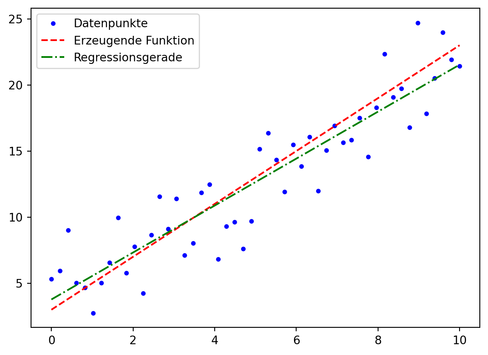
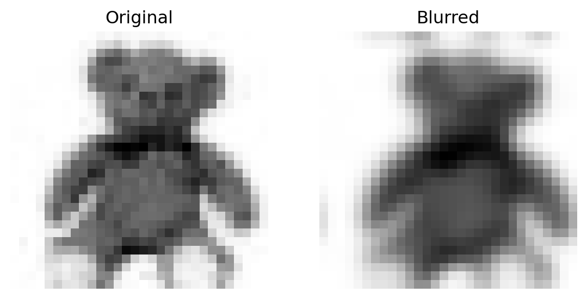

Code
def f(x0, x1):
v0 = x0
v1 = x1
v2 = v0 + v1
v3 = v2 * v0
v4 = v3 - v1
y = v4
return y
x0, x1 = 2, 3
y0 = f(x0, x1)
print("f(" + str(x0) + "," + str(x1) + ") = " + str(y0))f(2,3) = 7In Kapitel 4 haben wir gesehen, dass wir mit der Standard Algorithmischen Differentiation (SAD) alle \(m\) Ableitungen einer Funktion \(f : \mathbb{R} \rightarrow \mathbb{R}^m\) mit einem einzigen Funktionsaufruf berechnen können. Die Berechnung des Gradienten einer Funktion \(f : \mathbb{R}^n \rightarrow \mathbb{R}\) benötigt jedoch \(n\) Funktionsaufrufe, nämlich einen für jede partielle Ableitung \(\partial f / \partial x_i\). In diesem Kapitel wollen wir eine Methode entwickeln, die alle \(n\) partiellen Ableitungen in einem Funktionsaufruf berechnet.
Ähnlich wie die SAD beruht auch diese Methode darauf, dass wir eine komplizierte Funktion schrittweise mit Hilfe von elementaren Operationen berechnen und in jedem Schritt die Ableitungen in separaten Variablen akkumulieren. Wir führen also wieder unsere Konvention aus Kapitel Kapitel 1.2 ein. Auch dieses Mal werden wir in jedem Schritt die Kettenregel verwenden. Diesmal fangen wir jedoch am Ende der Funktion an und werden uns dann rückwärts durch alle Ableitungen arbeiten. Aus diesem Grund wird das Verfahren auch Rückwärts-AD 1 oder Adjungierte AD (AAD) genannt.
1 Im Englischen spricht man von reverse mode differentiation weil backward differentiation für bestimmte Methoden zur Integration von Differentialgleichungen verwendet wird.
Wir erläutern die Methode zuerst an einem einfachen Beispiel, welches eine leicht abgeänderte Version des Beispiels von Radcliffe (2021) ist.
Beispiel 5.1 (Gradient mit AAD)
Betrachten wir die Funktion \(f : \mathbb{R}^2 \rightarrow \mathbb{R}\) \[ y = f(x_0, x_1) = (x_0 + x_1) \cdot x_0 - x_1 \]
Als Programm können wir die Funktion unter Berücksichtigung der Konvention so schreiben (siehe auch Abbildung 5.1):
def f(x0, x1):
v0 = x0
v1 = x1
v2 = v0 + v1
v3 = v2 * v0
v4 = v3 - v1
y = v4
return y
x0, x1 = 2, 3
y0 = f(x0, x1)
print("f(" + str(x0) + "," + str(x1) + ") = " + str(y0))f(2,3) = 7
y = (x0 + x1) * x0 - x1.Die partiellen Ableitungen von \(f\) lauten \[ \begin{align*} \frac{\partial y}{\partial x_0} &= \frac{\partial f}{\partial x_0} = (1+0)\cdot x_0 + (x_0 + x_1)\cdot 1 - 0=2x_0 + x_1 \\ \frac{\partial y}{\partial x_1} &= \frac{\partial f}{\partial x_1} = (0 + 1)\cdot x_0 - 1 = x_0 - 1 \end{align*} \] wobei für die Ableitung nach \(x_0\) die Produktregel verwendet wurde. Die partielle Ableitung \(\partial y / \partial x_0\) können wir auch berechnen, indem wir bei \(y = v_4\) anfangen und jeweils die Definition der Hilfsvariablen einsetzen: \[ \begin{align*} \frac{\partial y}{\partial x_0} &= \frac{\partial v_4}{\partial x_0} \\ &= \frac{\partial (v_3 - v_1)}{\partial x_0} \\ &= \frac{\partial v_3}{\partial x_0} - \frac{\partial v_1}{\partial x_0} \\ &= \frac{\partial (v_2 \cdot v_0)}{\partial x_0} - \frac{\partial x_1}{\partial x_0} \\ &= \frac{\partial v_2}{\partial x_0} \cdot v_0 + v_2 \cdot \frac{\partial v_0}{\partial x_0} - 0 \\ &= \frac{\partial (v_0 + v_1)}{\partial x_0} \cdot v_0 + v_2 \cdot \frac{\partial x_0}{\partial x_0} \\ &= \left( \frac{\partial v_0}{\partial x_0} + \frac{\partial v_1}{\partial x_0} \right) \cdot x_0 + (v_0 + v_1) \cdot 1 \\ &= \left( \frac{\partial x_0}{\partial x_0} + \frac{\partial x_1}{\partial x_0} \right) \cdot x_0 + (x_0 + x_1) \\ &= (1 + 0) \cdot x_0 + (x_0 + x_1) \\ &= 2x_0 + x_1 \end{align*} \]
Analog findet man \(\partial y / \partial x_1\) (diesmal lassen wir einige der offensichtlicheren Zwischenschritte weg): \[ \begin{align*} \frac{\partial y}{\partial x_1} &= \frac{\partial v_4}{\partial x_1} \\ &= \frac{\partial v_3}{\partial x_1} - \frac{\partial v_1}{\partial x_1} \\ &= \frac{\partial (v_2 \cdot v_0)}{\partial x_1} - 1 \\ &= \frac{\partial v_2}{\partial x_1} \cdot v_0 + v_2 \cdot \frac{\partial v_0}{\partial x_1} - 1 \\ &= \frac{\partial (v_0 + v_1)}{\partial x_1} \cdot x_0 + v_2 \cdot 0 - 1 \\ &= \left( \frac{\partial v_0}{\partial x_1} + \frac{\partial v_1}{\partial x_1} \right) \cdot x_0 - 1 \\ &= ( 0 + 1) \cdot x_0 - 1 \\ &= x_0 - 1 \end{align*} \]
Um die beiden Rechnungen zusammenzufassen, führen nun für jede Hilfsvariable \(v_i\) eine neue Variable \(\bar v_i\) ein, welche definiert ist als \[ \bar v_i = \frac{\partial y}{\partial v_i} \] Ähnlich wie die \(\dot v_i\) aus der SAD speichern diese Variablen die Werte der Ableitungen. Die neue Notation soll anzeigen, dass es sich um die AAD Methode handelt. Unser Ziel ist es also, \(\bar v_0 = \partial y / \partial v_0 = \partial y / \partial x_0\) und \(\bar v_1 = \partial y / \partial v_1 = \partial y / \partial x_1\) zu bestimmen. Beginnen wir in der letzten Zeile des Programms, dann gilt offenbar immer \(\bar v_4 = \partial y / \partial v_4 = 1\). In der Zeile darüber können wir \(\bar v_3\) und \(\bar v_1\) berechnen, indem wir die Kettenregel verwenden.
\[\begin{align*} \bar v_3 &= \frac{\partial y}{\partial v_3} = \frac{\partial y}{\partial v_4} \cdot \frac{\partial v_4}{\partial v_3} = \bar v_4 \cdot (1-0)=\bar v_4 \\ \bar v_1 &= \frac{\partial y}{\partial v_1} = \frac{\partial y}{\partial v_4} \cdot \frac{\partial v_4}{\partial v_1} = \bar v_4 \cdot (0-1)= -\bar v_4 \end{align*}\]
Also sind \(\bar v_3 = 1\) und \(\bar v_1 = -1\). Der Zwischenwert in \(\bar v_1\) wird später ergänzt werden. Aus der Zeile \(v_3 = v_2 \cdot v_0\) lassen sich als nächstes Ausdrücke für \(\bar v_2\) und \(\bar v_0\) finden.
\[\begin{align*} \bar v_2 &= \frac{\partial y}{\partial v_2} = \frac{\partial y}{\partial v_3} \cdot \frac{\partial v_3}{\partial v_2} = \bar v_3 \cdot v_0 \\ \bar v_0 &= \frac{\partial y}{\partial v_0} = \frac{\partial y}{\partial v_3} \cdot \frac{\partial v_3}{\partial v_0} = \bar v_3 \cdot v_2 \end{align*}\]
Mit den vorher berechneten Werten erhalten wir also \(\bar v_2 = v_0\) und \(\bar v_0 = v_2\). Beide Werte sind durch die Funktion bereits berechnet worden. Im obigen Beispiel gilt etwa v0 = x0 = 2 und v2 = x0 + x1 = 5. Auch diese Zwischenwerte werden im nächsten Schritt ergänzt. Aus der Zeile \(v_2 = v_0 + v_1\) ergibt sich nämlich
\[\begin{align*} \bar v_0 &= \bar v_0 + \frac{\partial y}{\partial v_0} = \bar v_0 + \frac{\partial y}{\partial v_2} \cdot \frac{\partial v_2}{\partial v_0} \\ &= \bar v_0 + \bar v_2 \cdot (1+0) = \bar v_0 + \bar v_2 \\ & \\ \bar v_1 &= \bar v_1 + \frac{\partial y}{\partial v_1} = \bar v_1 + \frac{\partial y}{\partial v_2} \cdot \frac{\partial v_2}{\partial v_1} \\ &= \bar v_1 + \bar v_2 \cdot (0+1) = \bar v_1 + \bar v_2 \end{align*}\]
Mit den bereits bekannten Werten erhalten wir \(\bar v_0 = v_2 + v_0\) (bzw. mit den konkreten Werten des Beispiels v0bar = 5 + 2) und \(\bar v_1 = -1 + v_0\) (bzw. v1bar = -1 + 2). Nun enthalten die Variablen \(\bar v_0\) und \(\bar v_1\) die Werte der gewünschten Ableitungen, nämlich \(\bar v_0 = (v_0 + v_1) + v_0 = 2x_0 + x_1\) und \(\bar v_1 = -1 + x_0\). Wir können aber die letzten Schritte analog zu den vorherigen ausführen:
\[\begin{align*} \bar x_1 &= \frac{\partial y}{\partial x_1} = \frac{\partial y}{\partial v_1} \cdot \frac{\partial v_1}{\partial x_1} = \bar v_1 \cdot 1 \\ \bar x_0 &= \frac{\partial y}{\partial x_0} = \frac{\partial y}{\partial v_0} \cdot \frac{\partial v_0}{\partial x_0} = \bar v_0 \cdot 1 \\ \end{align*}\]
Die Schwierigkeit besteht darin, dass wir nicht wie bei der SAD in jedem Schritt die Variable \(v_i\) und gleichzeitig die Variable \(\dot v_i\) berechnen können. Um die \(\bar v_i\) zu bestimmen muss man zuerst die Funktion komplett ausführen, und sich dabei den Aufbau des Computational Graph merken. Erst dann kann man rückwärts die Ableitungswerte berechnen, angefangen bei der letzten Hilfsvariablen \(\bar v_4 = 1\). Das folgende Schema fasst die obigen Rechnungen zusammen.
\[\begin{equation*} \left \downarrow \begin{aligned}[c] v_0 &= x_0 \\ v_1 &= x_1 \\ v_2 &= v_0 + v_1 \\ v_3 &= v_2 \cdot v_0 \\ v_4 &= v_3 - v_1 \\ y &= v_4 \end{aligned} \right . \qquad \begin{aligned}[c] & \\ & \\ & \\ & \\ & \\ &\longrightarrow \end{aligned} \qquad \left \uparrow \begin{aligned}[c] \bar x_0 &= \bar v_0 = 2\cdot x_0 + x_1 \\ \bar x_1 &= \bar v_1 = -1 + x_0 \\ \bar v_0 &= \bar v_0 + \bar v_2, \quad \bar v_1 = \bar v_1 + \bar v_2 \\ \bar v_2 &= \bar v_3 \cdot v_0, \quad \bar v_0 = \bar v_3 \cdot v_2 \\ \bar v_3 &= \bar v_4, \quad \bar v_1 = -\bar v_4 \\ \bar v_4 &= \bar y = 1 \end{aligned} \right . \end{equation*}\]
def f(x0, x1):
v0 = x0
v1 = x1
v2 = v0 + v1
v3 = v2 * v0
v4 = v3 - v1
y = v4
v4bar = 1
v3bar = v4bar
v1bar = -v4bar
v2bar = v3bar * v0
v0bar = v3bar * v2
v0bar = v0bar + v2bar
v1bar = v1bar + v2bar
grad = [v0bar, v1bar]
return [y, grad]
x0, x1 = 2, 3
[y0, dy] = f(x0, x1)
print("Funktionswert: " + str(y0))
print("Gradient: " + str(dy))Funktionswert: 7
Gradient: [7, 1]Die Werte der Ableitungen \(\bar v_i\) lassen sich auch im Computational Graph verfolgen, siehe Abbildung 5.2. Der Wert bei der Kante von \(v_i\) nach \(v_j\) entspricht der partiellen Ableitung \(\partial v_i / \partial v_j\). Entlang eines Weges werden die Werte multipliziert. Führen mehrere Wege zu einer Variablen \(x_i\), so werden die Werte der einzelnen Wege addiert.
vbar.Übungsaufgabe 5.1 (Eigene Beispiele finden)
Schreibe eine eigene Funktion \(f : \mathbb{R}^n \rightarrow \mathbb{R}\) für \(n\in\lbrace 2, 3 \rbrace\) hin und erstelle den Computational Graph und ein Programm. Leite das Programm nach der oben beschriebenen AAD Methode ab und überzeuge dich an verschiedenen Stellen davon, dass der Gradient korrekt ist.
Nun wollen wir ähnlich wie im Kapitel 3.2 eine Klasse FloatAad entwerfen, welche die Berechnung aller Hilfsvariablen vbar automatisch ausführt. Wie auch zuvor hat jedes FloatAad-Objekt ein Attribut value vom Typ Int oder Float. Allerdings reicht es nicht mehr aus, ein Float-Attribut derivative zu definieren, um den Wert der Ableitung zu speichern weil auch die Struktur des Computational Graph gespeichert werden muss. Als Attribut derivatives wählen wir ein tuple, dessen erster Eintrag ein FloatAad-Objekt ist, nämlich die Variable, nach der die partielle Ableitung berechnet wird. Der zweite Eintrag ist der Wert dieser partiellen Ableitung. Da das erste Element des Tupels selber auch ein Attribut derivatives hat, entsteht so eine rekursive Darstellung des Computational Graph.
Die folgende Implementation lehnt sich stark an Radcliffe (2021) an. Die Variablennamen wurden angepasst, so dass sie konsistent mit den Bezeichnungen aus Kapitel 3 sind. Ausserdem werden wir unsere Klasse noch mit einiger zusätzlicher Funktionalität ausstatten, etwa mit Typunterscheidungen, so dass wir z.B. auch wieder Int-Zahlen zu FloatAad-Objekten addieren können.
FloatAadWir beginnen unsere Klasse mit einer neuen Datei, welche wir floataad.py nennen. Als erstes definieren wir einen Konstruktor, der uns das Umwandeln von Int- oder Float-Objekten in FloatAad-Objekte erlaubt. Ausserdem definieren wir auch gleich eine Funktion float2FloatAad, mit der wir eine Liste von solchen Int oder Float in eine Liste von FloatAad umwandeln können und eine Funktion getValues, welche aus einer Liste von FloatAad-Objekten die Funktionswerte ausliest, siehe dazu Kapitel 4.2.
import numpy as np
class FloatAad:
def __init__(self, value, derivatives = ()):
self.value = value
self.derivatives = derivatives
float2FloatAad = np.vectorize(lambda x: FloatAad(x))
getValues = np.vectorize(lambda x : x.value)
if __name__ == '__main__':
x = FloatAad(2)
print(x.value)
print(x.derivatives)
print("")
x = [1,2]
v = float2FloatAad(x)
print(type(v))
print(type(v[0]))
print(type(v[0].value))
print(type(v[0].derivatives))2
()
<class 'numpy.ndarray'>
<class '__main__.FloatAad'>
<class 'int'>
<class 'tuple'>Wir gehen bei der Implementation der unären und binären Operatoren etwas anders vor als im Kapitel 3.2 . Wir definieren zunächst Funktionen für die Operationen und benutzen diese, um die Operatoren zu überladen. Für das negative Vorzeichen sieht das so aus:
import numpy as np
class FloatAad:
def __init__(self, value, derivatives = ()):
self.value = value
self.derivatives = derivatives
def __pos__(self):
return self
def __neg__(self):
return neg(self)
float2FloatAad = np.vectorize(lambda x: FloatAad(x))
getValues = np.vectorize(lambda x : x.value)
def neg(a):
newValue = -1 * a.value
newDerivative = (
(a, -1),
)
return FloatAad(newValue, newDerivative)
if __name__ == '__main__':
x = FloatAad(2)
v = -x
print(v.value)
print(v.derivatives)-2
((<__main__.FloatAad object at 0x000001F475349DE0>, -1),)Der Wert von v.derivatives ist ein Tupel, dessen erster Eintrag eine Referenz auf das FloatAad-Objekt x ist und der Wert des zweiten Eintrags ist -1 weil \(\partial v / \partial x = -1\) ist.
+ und -Wenn wir zwei FloatAad-Objekte a und b addieren, dann müssen wir zwei Tupel als Ableitung zurückgeben, nämlich für \[
\frac{\partial}{\partial a}(a+b)=1 \qquad\textrm{und für}\qquad \frac{\partial}{\partial b}(a+b)=1
\]
Die entsprechende Funktion sieht so aus:
def add(a, b):
newValue = a.value + b.value
newDerivative = (
(a, 1), # a+b nach a abgeleitet gibt 1
(b, 1) # a+b nach b abgeleitet gibt 1
)
return FloatAad(newValue, newDerivative)Für das Überladen des +-Operators geben wir dann einfach return add(self, other) zurück. Wir wollen bei dieser Gelegenheit aber gleich noch die Typabfrage implementieren, so dass wir nicht nur zwei FloatAad-Objekte addieren können, sondern auch Ausdrücke wie x + 1 schreiben können. In diesem Fall brauchen wir für die newDerivative nur ein Tupel, welches wir direkt in der Funktion __add__ bestimmen. Der __radd__-Operator, mit dem wir einen Ausdruck wie 1 + x schreiben können, wird analog definiert.
def __add__(self, other):
if type(other) in [int, float]:
newValue = self.value + other
newDerivative = (
(self, 1),
)
return FloatAad(newValue, newDerivative)
else:
return add(self, other)
def __radd__(self, other):
if type(other) in [int, float]:
newValue = other + self.value
newDerivative = (
(self, 1),
)
return FloatAad(newValue, newDerivative)
else:
return add(other, self)Übungsaufgabe 5.2 (Den Operator - implementieren)
Implementiere die Funktionen __sub__ und __rsub__. Du kannst dafür die Funktionen neg(a) und add(a,b) verwenden.
def __sub__(self, other):
if type(other) in [int, float]:
newValue = self.value - other
newDerivative = (
(self, 1),
)
return FloatAad(newValue, newDerivative)
else:
return add(self, neg(other))
def __rsub__(self, other):
if type(other) in [int, float]:
newValue = other - self.value
newDerivative = (
(self, -1),
)
return FloatAad(newValue, newDerivative)
else:
return add(other, neg(self)) Hier ist die bisher implementierte Klasse zusammen mit einem kleinen Testprogramm, welches die Funktion \(f(x_0, x_1) = 2x_0 - x_1 + 5\) berechnet.
import numpy as np
class FloatAad:
def __init__(self, value, derivatives = ()):
self.value = value
self.derivatives = derivatives
def __pos__(self):
return self
def __neg__(self):
return neg(self)
def __add__(self, other):
if type(other) in [int, float]:
newValue = self.value + other
newDerivative = (
(self, 1),
)
return FloatAad(newValue, newDerivative)
else:
return add(self, other)
def __radd__(self, other):
if type(other) in [int, float]:
newValue = other + self.value
newDerivative = (
(self, 1),
)
return FloatAad(newValue, newDerivative)
else:
return add(other, self)
def __sub__(self, other):
if type(other) in [int, float]:
newValue = self.value - other
newDerivative = (
(self, 1),
)
return FloatAad(newValue, newDerivative)
else:
return add(self, neg(other))
def __rsub__(self, other):
if type(other) in [int, float]:
newValue = other - self.value
newDerivative = (
(self, -1),
)
return FloatAad(newValue, newDerivative)
else:
return add(other, neg(self))
float2FloatAad = np.vectorize(lambda x: FloatAad(x))
getValues = np.vectorize(lambda x : x.value)
def neg(a):
newValue = -1 * a.value
newDerivative = (
(a, -1),
)
return FloatAad(newValue, newDerivative)
def add(a, b):
newValue = a.value + b.value
newDerivative = (
(a, 1), # a+b nach a abgeleitet gibt 1
(b, 1) # a+b nach b abgeleitet gibt 1
)
return FloatAad(newValue, newDerivative)
if __name__ == '__main__':
x0 = FloatAad(2)
x1 = FloatAad(3)
y = x0 + x0 - x1 + 5
print(y.value)
print(y.derivatives)
print(y.derivatives[0][0].derivatives)6
((<__main__.FloatAad object at 0x000001F475332DD0>, 1),)
((<__main__.FloatAad object at 0x000001F475332CB0>, 1), (<__main__.FloatAad object at 0x000001F475332D40>, 1))Wir sehen, dass der Funktionswert \(f(2,3) = 6\) korrekt ist. Als Ableitung sehen wir jedoch nur ein Tupel bestehend aus einer Referenz auf ein FloatAad-Objekt und einem Zwischenschritt bei der Berechnung der Ableitung. Auch die Ableitung des referenzierten FloatAad-Objekts enthält nur ein weiteres solches Tupel. Mit anderen Worten, wir sehen noch nirgends den Wert der partiellen Ableitungen \(\partial f / \partial x_0 = 2\) und \(\partial f / \partial x_1 = -1\). Wir schreiben dafür nun eine Funktion getDerivatives(y), welche aus dem FloatAad-Objekt y rekursiv die partiellen Ableitungen berechnet. Dies geschieht nach der Regel, dass die Zwischenwerte der Ableitungen entlang eines Weges im Computational Graph multipliziert werden und Werte von verschiedenen Wegen, die zur gleichen Variablen \(x_i\) führen, addiert werden. Für diese rekursive Berechnung definieren wir eine lokale Funktion computeDerivative. Der Rückgabewert soll dann ein Dictionary sein (defaultdict aus dem Modul collections, welches zu Beginn importiert werden muss), dessen Schlüsselwerte die Variablen x0, x1 etc. sind und die zugehörigen Werte sind die partiellen Ableitungen \(\partial f / \partial x_i\).
def getDerivatives(y):
dy = defaultdict(lambda: 0)
def computeDerivatives(y, pathValue):
for node, localDerivative in y.derivatives:
# Multipliziere entlang eines Weges im Graph
valueOfPathToNode = pathValue * localDerivative
# Addiere entlang unterschiedlicher Wege
dy[node] = dy[node] + valueOfPathToNode
# Rekursion zum Durchlaufen des ganzen Graphen
computeDerivatives(node, valueOfPathToNode)
# Initialisierung mit 1 (Ableitung von y nach y)
computeDerivatives(y, pathValue = 1)
return dyDie partiellen Ableitungen können nun mit dy = getDerivatives(y) berechnet und mit dy[x0], bzw. dy[x1] ausgegeben werden.
Wenn der Input der Funktion eine Liste x0 ist, dann möchten wir noch eine Funktion getGradient(x0, y) haben, welche den Gradienten von y in Form einer Liste zurückgibt.
def getGradient(x0, y):
dy = getDerivatives(y)
grad = []
for i in range(len(x0)):
grad.append(dy[x0[i]])
return gradMit diesen Befehlen können wir nun unsere Programme testen.
if __name__ == '__main__':
x = [2, 3]
x = float2FloatAad(x)
y = x[0] + x[0] - x[1] + 5
dy = getGradient(x, y)
print(y.value)
print(dy)6
[2, -1]* und /Wenn wir zwei FloatAad-Objekte a und b multiplizieren, dann lauten die partiellen Ableitungen \[
\frac{\partial}{\partial a}(a \cdot b)=b \qquad\textrm{und}\qquad \frac{\partial}{\partial b}(a \cdot b)=a
\]
Wir erzeugen also wieder zwei Tupel für die Ableitung.
def mul(a, b):
newValue = a.value * b.value
newDerivative = (
(a, b.value), # a*b nach a abgeleitet gibt b
(b, a.value) # a*b nach b abgeleitet gibt a
)
return FloatAad(newValue, newDerivative)Damit überladen wir nun den *-Operator:
def __mul__(self, other):
if type(other) in [int, float]:
newValue = self.value * other
newDerivative = (
(self, other),
)
return FloatAad(newValue, newDerivative)
else:
return mul(self, other)
def __rmul__(self, other):
if type(other) in [int, float]:
newValue = other * self.value
newDerivative = (
(self, other),
)
return FloatAad(newValue, newDerivative)
else:
return mul(other, self)Übungsaufgabe 5.3 (Den Operator / implementieren)
Ähnlich wie in Übungsaufgabe 5.2 können wir die Division mit Hilfe der Funktion mul(a,b) realisieren. Schreibe dafür eine Funktion inv(a), welche in \(\frac{1}{a}\) als FloatAad-Objekt berechnet. Implementiere damit die Funktionen __truediv__ und __rtruediv__.
Die Funktion inv(a):
def inv(a):
newValue = 1. / a.value
newDerivative = (
(a, -1. / a.value**2),
)
return FloatAad(newValue, newDerivative)Und damit der /-Operator
def __truediv__(self, other):
if type(other) in [int, float]:
newValue = self.value / other
newDerivative = (
(self, 1 / other),
)
return FloatAad(newValue, newDerivative)
else:
return mul(self, inv(other))
def __rtruediv__(self, other):
if type(other) in [int, float]:
newValue = other / self.value
newDerivative = (
(self, - other / math.pow(self.value,2)),
)
return FloatAad(newValue, newDerivative)
else:
return mul(other, inv(self))**Es fehlt nun nur noch der Potenzoperator. Die partiellen Ableitungen von \(a^b\) lauten \[ \frac{\partial}{\partial a}(a^b)=b\cdot a^{b-1} \qquad\textrm{und}\qquad \frac{\partial}{\partial b}(a^b)=a^b \cdot \ln(a) \]
Wieder definieren wir uns zuerst eine Funktion
def pow(a, b):
newValue = math.pow(a.value,b.value)
newDerivative = (
(a, b.value * math.pow(a.value, b.value-1)), # a^b nach a abgeleitet gibt b*a^(b-1)
(b, math.pow(a.value, b.value) * math.log(a.value)) # a^b nach b abgeleitet gibt a^b * ln(a)
)
return FloatAad(newValue, newDerivative)und benutzen diese zur Überladung des **-Operators:
def __pow__(self, other):
if type(other) in [int, float]:
newValue = math.pow(self.value, other)
newDerivative = (
(self, other * math.pow(self.value, other - 1)),
)
return FloatAad(newValue, newDerivative)
else:
return pow(self, other)
def __rpow__(self, other):
if type(other) in [int, float]:
newValue = math.pow(other, self.value)
newDerivative = (
(self, math.pow(other, self.value) * math.log(other)),
)
return FloatAad(newValue, newDerivative)
else:
return pow(other, self)Die fertige Klasse FloatAad von hier kopiert werden.
FloatAad im EinsatzWir sind nun in der Lage, Gradienten von Funktionen zu berechnen, solange darin noch keine Ausdrücke wie \(\sin(x)\) oder \(\ln(x)\) etc. vorkommen.
Beispiel 5.2 (Gradient mit FloatAad)
Betrachte die Funktion \[ f(x_0, x_1, x_2) = x_0 \cdot x_1^2 + \frac{2 ^{x_1}}{x_2} - \frac{2}{x_2^2} \] Der Gradient lautet \[ \nabla f = \begin{pmatrix} x_1^2 , \; 2x_0x_1 + \frac{2^{x_1}\cdot\ln(2)}{x_2} , \; -\frac{2^{x_1}}{x_2^2}+\frac{4}{x_2^3} \end{pmatrix} \]
Werten wir die Funktion an der Stelle \((x_0, x_1, x_2) = (3, 2, -1)\) aus, dann erhalten wir \(f(3, 2, -1) = 6\) und
\[\begin{align*} \nabla f|_{(3, 2 -1)} &= \begin{pmatrix} 4 , \; 12-4\cdot \ln(2) ,\; -8 \end{pmatrix} \\ &\approx \begin{pmatrix} 4 , \; 9.23 , \; -8 \end{pmatrix} \end{align*}\]
Testen wir dies mit unserer Klasse:
from floataad import float2FloatAad, getGradient
def f(x):
v1 = x[0] * x[1]**2
v2 = 2**x[1] / x[2]
v3 = 2 / x[2]**2
y = v1 + v2 - v3
return y
x0 = [3,2,-1]
x0 = float2FloatAad(x0)
y = f(x0)
y0 = y.value
dy = getGradient(x0, y)
print("Funktionswert: " + str(y0))
print("Gradient: " + str(dy))Funktionswert: 6.0
Gradient: [4.0, 9.227411277760218, -8.0]Wir können mit der Klasse FloatAad auch die Jacobi Matrix einer Funktion \(f : \mathbb{R}^n \rightarrow \mathbb{R}^m\) bestimmen. Ähnlich wie in Kapitel 4.3 benötigen wir dazu jedoch mehrere Durchgänge. Diesmal muss jede Zeile der Matrix \(Jf\) einzeln berechnet werden. Dafür müssen wir die Methode getGradient \(m\) Mal aufrufen, nämlich einmal für jedes y[i]. Um dies zu automatisieren definieren wir uns wieder zwei Funktionen getValues und getJacobian (welche wir natürlich auch in die Klasse FloatAad schreiben könnten). Während FloatSad günstig war, solange \(n<m\) war, so ist FloatAad günstig, wenn \(n>m\) ist.
Beispiel 5.3 (Jacobi Matrix mit FloatAad)
Wir betrachten die Funktion \(f : \mathbb{R}^3 \rightarrow \mathbb{R}^2\) mit \[ f(x_0, x_1, x_2) = \begin{pmatrix} y_0 \\ y_1 \end{pmatrix} = \begin{pmatrix} x_0 + x_1^2 + \frac{1}{x_2} \\ x_0 \cdot x_1 \cdot x_2 \end{pmatrix} \]
Die Jacobi Matrix lautet \[\begin{align*} Jf &= \begin{pmatrix} \frac{\partial y_0}{\partial x_0} & \frac{\partial y_0}{\partial x_1} & \frac{\partial y_0}{\partial x_2} \\ \frac{\partial y_1}{\partial x_0} & \frac{\partial y_1}{\partial x_1} & \frac{\partial y_1}{\partial x_2} \end{pmatrix} \\ &= \begin{pmatrix} 1 & 2x_1 & -\frac{1}{x_2 ^2} \\ x_1 x_2 & x_0 x_2 & x_0 x_1 \end{pmatrix} \end{align*}\]
Ausgewertet an der Stelle \((x_0, x_1, x_2) = (-2, -4, 0.5)\) erhalten wir \(f(-2, -4, 0.5) = (16, 4)^\intercal\) und \[ Jf|_{(-2,-4,0.5)} = \begin{pmatrix} 1 & -8 & -4 \\ -2 & -1 & 8 \end{pmatrix} \]
Als Programm mit den oben beschriebenen Funktionen erhalten wir
from floataad import float2FloatAad, getGradient
import numpy as np
def f(x):
y0 = x[0] + x[1]**2 + 1/x[2]
y1 = x[0] * x[1] * x[2]
return [y0, y1]
x0 = [-2,-4,0.5]
x0 = float2FloatAad(x0)
getValues = np.vectorize(lambda y : y.value)
getJacobian = lambda x,y : np.array([getGradient(x, y[i]) for i in range(len(y))])
y = f(x0)
val = getValues(y)
Jacobian = getJacobian(x0, y)
print("Funktionswert: " +str(val))
print("Jf =")
print(Jacobian)Funktionswert: [16. 4.]
Jf =
[[ 1. -8. -4.]
[-2. -1. 8.]]Eine Funktion \(f : \mathbb{R}^2 \rightarrow \mathbb{R}\) kann man sich als eine i.A. gekrümmte Fläche im \(\mathbb{R}^3\) vorstellen. Der Gradient \(\nabla f|_{(x_0, x_1)}\) ist ein Vektor in \(\mathbb{R}^2\), der gerade in die Richtung des steilsten Anstiegs der Fläche beim Punkt \((x_0, x_1)\) zeigt. Entsprechend zeigt \(-\nabla f\) in die Richtung des steilsten Abstiegs, siehe Arens u. a. (2022), S. 871. Damit lässt sich die Gradient Descent Methode zur Bestimmung eines lokalen Minimums, die wir im Kapitel 1.3.2 kennen gelernt haben, auch zum Auffinden eines lokalen Minimums einer Fläche verwenden. Sie lässt sich sogar auf Funktionen \(f : \mathbb{R}^n \rightarrow \mathbb{R}\) anwenden, siehe Arens u. a. (2022), S. 1324.
Im Fall einer 2-dimensionalen Fläche starten wir an einem Punkt \((x_{0,0}, x_{1,0})\), welchen wir durch seinen Ortsvektor \(\vec{x}_0\) beschreiben. Dann berechnen wir rekursiv eine Folge von (Ortsvektoren zu) Punkten \(\vec{x}_n\), welche im Idealfall zu einem lokalen Minimum der Funktion konvergieren, gemäss der Vorschrift \[ \vec{x}_{n+1} = \vec{x}_n - \lambda\cdot(\nabla f(\vec{x}_n))^\intercal \]
\(\lambda\in\mathbb{R}^+\) beeinflusst wie im Kapitel 1.3.2 die Schrittweite. Ist \(\lambda\) zu klein, dann konvergiert die Iteration nur sehr langsam, wird \(\lambda\) hingegen zu gross gewählt, dann kann es passieren, dass sich die Iteration von einem lokalen Minimum wieder weg bewegt.
Beispiel 5.4 (Gradient Descent auf einer Fläche)
Betrachte die Funktion \(f(x_0, x_1) = x_0^4 + x_1^4 + x_0 x_1^3 - x_0^2 x_1 - x_1^2\).
Hier wird diese Funktion einmal als 2-dimensionale Fläche und einmal als mit Hilfe von Konturlinien dargestellt. Im linken Feld kann man den Startpunkt und \(\lambda\) wählen und die ersten 30 Iterationen darstellen.
Man erkennt, dass die Funktion drei lokale Minima hat.
Nun wollen wir ein lokales Minimum mit Hilfe der Gradient Descent Methode finden. Damit wir \(\lambda \cdot (\nabla f)\) als lam * df berechnen können, wandeln wir die Liste, die wir mit getGradient erhalten, in ein numpy-array um. Die oben beschriebene Iteration wird so lange ausgeführt, bis \(|\vec{x}_{n+1}-\vec{x}_n|\le 10^{-6}\) ist.
from floataad import float2FloatAad, getGradient
import numpy as np
def f(x):
y = x[0]**4 + x[1]**4 + x[0] * x[1]**3
y = y - x[0]**2 * x[1] - x[1]**2
return y
getValues = np.vectorize(lambda y : y.value)
# Startwert und Lambda für Gradient Descent
x0 = [0.5, 0]
lam = 0.1
tol = 1e-6 # Toleranz für Abbruchbedingung
x0 = float2FloatAad(x0)
y0 = f(x0)
dy = np.array(getGradient(x0, y0))
# Erster Schritt
x1 = x0 - lam * dy
# Iteration bis die Distanz zwischen zwei
# aufeinanderfolgenden Punkten kleiner ist als tol.
while np.linalg.norm(getValues(x0) - getValues(x1)) > tol:
x0 = x1
y0 = f(x0)
dy = np.array(getGradient(x0, y0))
x1 = x0 - lam * dy
print("Lokales Minimum gefunden in der Nähe von")
print(getValues(x1))Lokales Minimum gefunden in der Nähe von
[0.40427048 0.6160611 ]Die folgenden drei Abschnitte beschreiben verschiedene Anwendungen des Gradient Descent Verfahrens, die wir mit Hilfe von FloatAad programmieren können.
Beim klassischen Ausgleichsproblem sind \(n\) Datenpunkte \((x_i , y_i)\) (Messwerte) gegeben, zwischen denen ein linearer Zusammenhang vermutet wird, d.h. \(y_i \approx g(x_i) = a\cdot x_i + b\). Auf Grund von Messfehlern und anderen Einflüssen können wir jedoch nicht erwarten, dass der Zusammenhang exakt einer linearen Funktion entspricht, d.h. der Fehler \(y_i - g(x_i)\) ist im Allgemeinen nicht Null. Das Ziel ist nun, die Parameter \(a\) und \(b\) so zu bestimmen, dass die Summe der Quadrate dieser Fehler möglichst klein wird. Mit anderen Worten: wir suchen das Minimum der Funktion \(\Phi : \mathbb{R}^2 \rightarrow \mathbb{R}\) \[ \Phi(a, b) = \sum_{i = 1}^n (y_i - (a\cdot x_i + b))^2 \] Dieser Ansatz stammt von Gauss und wird auch die Methode der kleinsten Fehlerquadrate genannt. Die Funktion \(\Phi\) wird insbesondere im Kontext des maschinellen Lernens auch Loss Funktion genannt. Da es sich bei \(\Phi(a,b)\) um eine quadratische Funktion in \(a\) und \(b\) handelt, besitzt sie ein eindeutiges Minimum, welches auch rein analytisch gefunden werden kann, siehe z.B. Arens u. a. (2022), S. 1526. Wir wollen das Minimum aber mit dem Gradient Descent Verfahren bestimmen. Als Startwert verwenden wir einfach \((a, b) = (0, 0)\).
Beispiel 5.5 (Lineare Regression mit Gradient Descent und AAD)
In diesem Beispiel gehen wir davon aus, dass der korrekte, aber unbekannte, lineare Zusammenhang durch \(y = f(x) = 2x+3\) gegeben ist. Wir erzeugen zunächst eine Anzahl von anz = 50 Datenpunkten, die zufällig um diese Gerade streuen. Danach versuchen wir, die Parameter \(a\) und \(b\) mittels linearer Regression aus diesen Datenpunkten zu rekonstruieren. Die Funktion loss(a, b) berechnet die Funktion \(\Phi(a,b)\), deren Ableitung automatisch mittels FloatAad berechnet wird. Der so berechnete Gradient von \(\Phi\) wird für das Gradient Descent Verfahren verwendet. Da die Funktion nur zwei unabhängige Variablen hat, verwenden wir direkt den Konstruktor FloatAad und die Methode getDerivatives anstelle der vektorisierten Methoden float2FloatAad und getGradient. Schliesslich werden die Datenpunkte zusammen mit der korrekten Funktion \(f\) und der Ausgleichsgeraden \(g\) grafisch dargestellt.
from floataad import FloatAad, getDerivatives
import numpy as np
import matplotlib.pyplot as plt
def loss(a, b):
# X und Y werden im global space gefunden
sum = 0
for i in range(len(X)):
d = float(Y[i]) - (a * float(X[i]) + b)
sum += d**2
return np.sum(sum)
# Parameter zur Erzeugung der Datenpunkte
anz = 50 # Anzahl Datenpunkte
xmin, xmax = 0, 10
s = 2 # Streuung
# Erzeugende Funktion
f = lambda x: 2 * x + 3
# Daten erzeugen
X = np.linspace(xmin, xmax, anz)
Y = f(X)
# Rauschen hinzufügen
Y = Y + s * np.random.randn(anz)
# Gradient Descent
lam = 0.0005
a0, b0 = FloatAad(0), FloatAad(0) # Startwerte
Phi = loss(a0, b0)
dPhi = getDerivatives(Phi)
a1 = a0 - lam * dPhi[a0]
b1 = b0 - lam * dPhi[b0]
while (a1.value-a0.value)**2 + (b1.value-b0.value)**2 > 1e-9:
a0, b0 = a1, b1
Phi = loss(a0, b0)
dPhi = getDerivatives(Phi)
a1 = a0 - lam * dPhi[a0]
b1 = b0 - lam * dPhi[b0]
# Regressionsgerade
a, b = a1.value, b1.value
g = np.vectorize(lambda x : a * x + b)
print("y = g(x) = " + str(a) + "x + " + str(b))
# Daten darstellen
plt.plot(X,Y, 'b.', X, f(X), 'r--', X, g(X), 'g-.')
plt.legend(["Datenpunkte", "Erzeugende Funktion", "Regressionsgerade"])
plt.show()y = g(x) = 1.9970709230222317x + 2.7231287432323
Die Idee zu dieser Anwendung stammt von Slater (2022). Beim Fotografieren kann es passieren, dass die Linse der Kamera nicht richtig fokussiert ist und das Bild dadurch unscharf wirkt. Es ist jedoch möglich, ein Bild bis zu einem gewissen Grad nachträglich zu schärfen.
Als Testbild verwenden wir das folgende Bild eines Teddybären, welches unter der Creative Commons 4.0 Lizenz auf https://www.pngall.com/toy-png/download/55843 [Letzter Zugriff 02.04.2023] zur Verfügung gestellt wird. Allerdings müssen wir die Auflösung von ursprünglich 180 x 180 Pixel auf 30 x 30 Pixel reduzieren, was mit jeder Bildbearbeitungssoftware gemacht werden kann. Der Grund dafür ist, dass die Anzahl Pixel darüber entscheidet, wie viele FloatAad-Objekte wir erzeugen müssen und während des Gradient Descent Verfahrens wird der Computational Graph bei vielen Variablen sehr gross, so dass beim Berechnen der Ableitungen die maximale Rekursionstiefe überschritten würde. Wir verwenden also das in rechts dargestellte Bild Bear30.jpg.
Es stellt sich heraus, dass selbst diese kleine Auflösung noch zu viele FloatAad-Objekte benötigt weil jedes Pixel drei Farbkanäle hat. Daher wandeln wir das Bild nach dem Laden zuerst in ein Graustufenbild um.
from matplotlib.image import imread
from floataad import float2FloatAad, getGradient
import matplotlib.pyplot as plt
import math
import numpy as np
original = imread('bear30.jpg') / 255
# Bild in Graustufenbild umwandeln
image = 1/3 * (original[:,:,0] + original[:,:,1] + original[:,:,2])
[length, width] = np.shape(image)Um die Unschärfe einer schlecht fokussierten Linse zu simulieren, wenden wir einen Gaussian Blur an. Wie das genau funktioniert wird z.B. in diesem Video von Grant Sanderson von 3blue1brown [Letzter Zugriff 02.04.2023] erklärt.
Die folgende Funktion wendet einen solchen Gaussian Blur auf ein Bild an. Die Vorlage des Codes stammt aus dem Forumsbeitrag How to gauss-filter (blur) a floating point numpy array von stackoverflow [Letzter Zugriff 02.04.2023] und wurde so abgeändert, dass die kernel-Grösse selber bestimmt werden kann.
def blur(a):
# kernel erzeugen
kernel_size = 4
k1 = [np.array([math.comb(kernel_size, k) for k in range(kernel_size)])]
kernel = np.dot(np.transpose(k1), k1)
kernel = kernel / np.sum(kernel)
# Faltung (Convolution) ausführen
arraylist = []
for y in range(kernel_size):
temparray = np.copy(a)
temparray = np.roll(temparray, y - 1, axis=0)
for x in range(kernel_size):
temparray_X = np.copy(temparray)
temparray_X = np.roll(temparray_X, x - 1, axis=1)*kernel[y,x]
arraylist.append(temparray_X)
arraylist = np.array(arraylist)
arraylist_sum = np.sum(arraylist, axis=0)
return arraylist_sumNun wenden wir diesen Filter auf unser Testbild an.
# Blur erzeugen
blurredimage = blur(image)
blurrarray = np.reshape(blurredimage, length*width)
# Plot
ax = plt.subplot(1,2,1)
ax.set_title("Original")
ax.set_axis_off()
plt.imshow(image, cmap = "gray")
ax = plt.subplot(1,2,2)
ax.set_title("Blurred")
ax.set_axis_off()
plt.imshow(blurredimage, cmap = "gray")
plt.show()
Unser Ziel ist wie gesagt, mit Hilfe des Gradient Descent Verfahrens aus dem unscharfen Bild rechts wieder so nahe wie möglich an das Original heranzukommen. Dazu beginnen wir mit einem “Startwert”, das ein Bild ist, welches aus 30 x 30 Pixeln besteht, die alle den Wert 0.5 haben, d.h. mit einem grauen Bild.
# Startwert
guessimage = np.full(shape = [length, width], fill_value=0.5)Diese \(30\times30=900\) Pixelwerte sind nun der Input unserer Loss Funktion und werden im Laufe der Gradient Descent Iteration so verändert, dass sie diese Funktion minimieren. Diese Loss Funktion definieren wir folgendermassen: Auf das guessimage wird zuerst ein Gaussian Blur angewendet. Danach betrachten wir die Differenzen blur(guessimage) - blurredimage in jedem Pixel. Nach dem Gauss’schen Ansatz der kleinsten Fehlerquadrate definieren wir die Loss Funktion als Summe der Quadrate aller Fehler in den einzelnen Pixeln. Dahinter steckt die Idee, dass wenn die Differenzen zwischen den unscharfen Bildern blur(guessimage) - blur(original) klein ist, dann sollten auch die Differenzen guessimage - original klein sein, d.h. testimage sollte in etwa dem original entsprechen.
Für die konkrete Umsetzung wandeln wir das Bild mit den \(30\times30\) Pixeln in einen Vektor der Länge 900 um. Das haben wir für für das blurredimage bereits in der Zeile blurrarray = np.reshape(blurredimage, length*width) gemacht. Für das guessimage müssen wir nach der Umwandlung die 900 Einträge zunächst in FloatAad-Objekte umwandeln. All das geschieht in der folgenden Funktion.
def loss(x):
# Input x ist ein Bild, auf welches der Gauss Filter angewendet wird
# Danach wird das Bild als 1-dim. Array gespeichert
[length, width] = np.shape(x)
temp = blur(x)
temparray = np.reshape(temp, length * width)
# Umwandeln in FloatAad
temparray = float2FloatAad(temparray)
y = sum((temparray - blurrarray) ** 2)
g = getGradient(temparray, y)
return [y.value, g]Nun können wir das Gradient Descent Verfahren anwenden.
# Gradient Descent Parameter
lam = 0.01
tol = 0.5
[lossval, grad] = loss(guessimage)
while lossval > tol:
[lossval, grad] = loss(guessimage)
diff = np.reshape(grad, [length, width])
guessimage = guessimage - lam * diff
# Plot
ax = plt.subplot(2,2,1)
ax.set_title("Guess")
ax.set_axis_off()
plt.imshow(guessimage, cmap = "gray")
ax = plt.subplot(2,2,2)
ax.set_title("Blurred Guess")
ax.set_axis_off()
blurredguess = blur(guessimage)
plt.imshow(blurredguess, cmap = "gray")
ax = plt.subplot(2,2,3)
ax.set_title("Original - Guess")
ax.set_axis_off()
diffOrig = 0.5 * (image - guessimage + 1)
plt.imshow(diffOrig, cmap = "gray")
ax = plt.subplot(2,2,4)
ax.set_title("Blurred - Blurred Guess")
ax.set_axis_off()
diffBlurred = 0.5 * (blurredimage - blurredguess + 1)
plt.imshow(diffBlurred, cmap = "gray")
plt.show()Das vollständige Programm kann auch hier heruntergeladen werden.
mathaadIn diesem Kapitel schreiben wir ein Modul mathaad, welches eine Auswahl an mathematischen Funktionen beinhaltet, die auf FloatAad-Objekte angewendet werden können. Wir gehen dabei analog zum Kapitel 3.4 vor, beschränken uns aber auf die Funktionen sqrt, exp, log und die drei trigonometrischen Funktionen. Ausserdem verwenden wir Funktionen aus numpy weil wir als Argumente auch Arrays von FloatAad-Objekte übergeben wollen. Die Funktion soll in diesem Fall elementweise angewendet werden, wofür der Decorator @np.vectorize sorg. Der folgende Code sollte in einer Datei mathaad.py gespeichert und im gleichen Ordner wie die anderen Dateien abgelegt werden.
import numpy as np
from floataad import FloatAad
@np.vectorize
def sqrt(x):
newValue = np.sqrt(x.value)
newDerivative = (
(x, 1. / (2 * np.sqrt(x.value))),
)
return FloatAad(newValue, newDerivative)
@np.vectorize
def exp(x):
newValue = np.exp(x.value)
newDerivative = (
(x, newValue),
)
return FloatAad(newValue, newDerivative)
@np.vectorize
def log(x):
newValue = np.log(x.value)
newDerivative = (
(x, 1. / x.value),
)
return FloatAad(newValue, newDerivative)
@np.vectorize
def sin(x):
newValue = np.sin(x.value)
newDerivative = (
(x, np.cos(x.value)),
)
return FloatAad(newValue, newDerivative)
@np.vectorize
def cos(x):
newValue = np.cos(x.value)
newDerivative = (
(x, -np.sin(x.value)),
)
return FloatAad(newValue, newDerivative)
@np.vectorize
def tan(x):
return sin(x) / cos(x)Die Datei kann hier heruntergeladen werden.
mathaad im EinsatzZum Schluss wollen wir uns ein einfaches neuronales Netz zur Lösung eines berühmten Klassifikationsproblems programmieren.
Wir verwenden für dieses Beispiel einen der bekanntesten Datensätze, nämlich Fisher’s Datensatz zu Lilien. Er wurde bereits 1936 vom britischen Biologen und Statistier Ronald Fisher verwendet und ist heute nach ihm benannt. Auch in Barot u. a. (2022) (S. 160) wird auf diesen Datensatz Bezug genommen. Die Datei iris.data kann von Fisher (1936) heruntergeladen werden. Über diesen Datensatz liest man dort
[It is] A small classic dataset from Fisher, 1936. One of the earliest datasets used for evaluation of classification methodologies. […] This is perhaps the best known database to be found in the pattern recognition literature. Fisher’s paper is a classic in the field and is referenced frequently to this day.
Die Datei enthält 150 Datensätze (Zeilen) mit je 5 Spalten. Die 1. Spalte gibt die Länge des Kelchblattes (Sepalum) an, die 2. Spalte die Breite des Kelchblattes, die 3. Spalte enthält die Länge des Kornblattes (Petalum) und die 4. Spalte enthält die Breite des Kornblattes. Die 5. Spalte schliesslich gibt an, von welcher Lilienart die Daten stammen. Im Datensatz gibt es drei Arten von Lilien (Iris setosa, Iris versicolor und Iris virginica) und von jeder Art sind 50 Messungen enthalten.
Unser Ziel wird es sein, auf Grund der vier gemessenen Grössen (Länge und Breite des Kelch- bzw. Kornblattes) die Art vorher zu sagen. Als erstes wollen wir die Daten grafisch als Scatterplot darstellen (Frochte (2021), S. 71). Zunächst ändern wir aber die Label in der 5. Spalte noch zu 0 (Iris setosa), 1 (Iris versicolor), bzw. 2 (Iris virginica)
import numpy as np
import matplotlib.pyplot as plt
from time import time
from floataad import float2FloatAad, getValues, getGradient
import mathaad
# Daten einlesen
# Label in 0 (Iris-setosa), bzw. 1 (Iris-versicolor), bzw. 2 (Iris-virginica) ändern
fString = open('iris.data','r')
fFloat = open('iris.csv','w')
for line in fString:
line = line.replace('Iris-setosa', '0')
line = line.replace('Iris-versicolor', '1')
line = line.replace('Iris-virginica', '2')
fFloat.write(line)
fString.close()
fFloat.close()
fFloat = open('iris.csv','r')
dataset = np.loadtxt(fFloat, delimiter = ',')
fFloat.close()
# Daten plotten
fig = plt.figure(1)
ax = fig.add_subplot(2,2,1)
ax.scatter(dataset[0:50,0], dataset[0:50,1],
c = 'red', s = 20, alpha = 0.6)
ax.scatter(dataset[50:100,0], dataset[50:100,1],
c = 'green', marker = '^', s = 20, alpha = 0.6)
ax.scatter(dataset[100:150,0], dataset[100:150,1],
c = 'blue', marker = '*', s = 20, alpha = 0.6)
ax.set_xlabel('Kelchblattlaenge (cm)')
ax.set_ylabel('Kelchblattbreite (cm)')
ax = fig.add_subplot(2,2,2)
ax.scatter(dataset[0:50,2], dataset[0:50,3],
c = 'red', s = 20, alpha = 0.6)
ax.scatter(dataset[50:100,2], dataset[50:100,3],
c = 'green', marker = '^', s = 20, alpha = 0.6)
ax.scatter(dataset[100:150,2], dataset[100:150,3],
c = 'blue', marker = '*', s = 20, alpha = 0.6)
ax.set_xlabel('Kronblattlaenge (cm)')
ax.set_ylabel('Kronblattbreite (cm)')
ax = fig.add_subplot(2,2,3)
ax.scatter(dataset[0:50,0], dataset[0:50,2],
c = 'red', s = 20, alpha = 0.6)
ax.scatter(dataset[50:100,0], dataset[50:100,2],
c = 'green', marker = '^', s = 20, alpha = 0.6)
ax.scatter(dataset[100:150,0], dataset[100:150,2],
c = 'blue', marker = '*', s = 20, alpha = 0.6)
ax.set_xlabel('Kelchblattlaenge (cm)')
ax.set_ylabel('Kronblattlaenge (cm)')
ax = fig.add_subplot(2,2,4)
ax.scatter(dataset[0:50,1], dataset[0:50,3],
c = 'red', s = 20, alpha = 0.6)
ax.scatter(dataset[50:100,1], dataset[50:100,3],
c = 'green', marker = '^', s = 20, alpha = 0.6)
ax.scatter(dataset[100:150,1], dataset[100:150,3],
c = 'blue', marker = '*', s = 20, alpha = 0.6)
ax.set_xlabel('Kelchblattbreite (cm)')
ax.set_ylabel('Kronblattbreite (cm)')
plt.show()Nun wählen wir uns aus den 150 Einträgen des Datensatzes zufällig 30 heraus, welche wir als Testdaten verwenden. Die übrigen 120 Einträge dienen uns als Trainingsdaten, mit denen wir unser neuronales Netz trainieren werden.
# Daten in Trainings- und Testdaten aufteilen
X = dataset[:, 0:4] # Messwerte
Y = dataset[:, 4] # Label
allData = np.arange(0, X.shape[0])
testIndices = np.random.choice(X.shape[0], size = 30, replace = False)
trainIndices = np.delete(allData, testIndices)
dataRecords = len(testIndices)
XTrain = X[trainIndices, :]
YTrain = np.array(Y[trainIndices], dtype = np.int32)
XTest = X[testIndices, :]
YTest = Y[testIndices]Unser Netz soll aus 4 Inputneuronen und 3 Outputneuronen bestehen. Die vier Inputs stehen für die vier Messwerte X[0], ..., X[3]. Wenn dort die entsprechenden Messwerte eingegeben wurden, dann werden bei den Outputneuronen Y[0], ..., Y[2] vier Werte zwischen \(0\) und \(1\) generiert, welche die Wahrscheinlichkeiten darstellen, dass es sich um die entsprechende Lilienart handelt. Das Neuron mit dem grössten Wert stellt unsere Vorhersage dar. Das neuronale Netz hat also die folgende Architektur:
Entlang jeder Kante multiplizeren wir den Wert \(x_i\) mit einem Gewicht \(w_{ij}\) und addieren die vier Werte. Zu dieser Summe addieren wir noch einen Bias \(b_i\) so entstehen drei Zwischenwerte \[
z_i = \sum_{j=0}^3 w_{ij}x_j + b_i \quad\textrm{für}\quad i\in\lbrace0, 1, 2\rbrace
\] In Matrixschreibweise können wir das ausdrücken als \[
\vec{z} = W\cdot \vec{x} + \vec{b}
\] mit \(W\in \mathbb{R}^{3\times 4}\), \(\vec{x}\in\mathbb{R}^4\) und \(\vec{b}, \vec{z} \in \mathbb{R}^3\). Die Zwischenwerten \(z_i\) müssen nun noch so skaliert werden, dass sie eine Wahrscheinlichkeitsverteilung darstellen. Das erreichen wir, die Softmax Funktion anwenden: \[
\hat y_i = \sigma_i(\vec z) = \frac{e^{z_i}}{\sum_{k=0}^2 e^{z_k}} \quad\textrm{für}\quad i\in\lbrace0, 1, 2\rbrace
\] Mehr zur Softmax Funktion findet man z.B. in Frochte (2021) (S. 240). Im folgenden Programm unterscheiden wir noch, ob wir die Funktion auf einen Vektor aus Zahlen oder einen Vektor aus FloatAad-Objekten anwenden.
# Softmax Funktion für Vektor z
def softmax(z):
if z.dtype == "object":
return [mathaad.exp(x) / sum(mathaad.exp(z)) for x in z]
else:
return [np.exp(x) / sum(np.exp(z)) for x in z]Unsere Vorhersage ist dann der Wert \[ y = \operatorname{argmax} \hat y_i \in \lbrace0, 1, 2\rbrace \]
Die Frage ist also, wie wir die 12 Gewichte \(w_{ij}\) und die Bias \(b_i\) wählen. Letztere setzen wir einfach auf \(b_i = 1\) für alle \(i\). Bei der Bestimmung der Gewichte kommen unsere Trainingsdaten ins Spiel. Wir definieren uns eine Loss Funktion \(J : \mathbb{R}^{12} \rightarrow \mathbb{R}\), welche als Input die Gewichte \(W\) erhält und als Output die so genannte Cross-Entropy liefert, welche ein Mass für die Abweichung von der korrekten Klassifikation ist. Sie wird bestimmt, indem man zuerst \[ D(\vec y, \vec {\hat y}) = - \sum_i y_i\cdot \ln(\hat y_i) \] berechnet, wobei die \(\hat y_i\) wie oben definiert sind und \(\vec y = (y_i)_{i=0, 1, 2}\) die One-Hot Codierung der korrekten Labels ist, d.h. \[\begin{align*} \vec y &= (\matrix{1, 0, 0})^\intercal \quad\textrm{falls der korrekte Label 0 (Iris setosa) ist,} \\ \vec y &= (\matrix{0, 1, 0})^\intercal \quad\textrm{falls der korrekte Label 1 (Iris versicolor) ist,} \\ \vec y &= (\matrix{0, 0, 1})^\intercal \quad\textrm{falls der korrekte Label 2 (Iris virginica) ist.} \end{align*}\]
Die Cross-Entropy über alle \(N=120\) Beispiele erhält man dann als Mittelwert dieser Grössen \[
J(W) = \frac{1}{N}\sum_{n=0}^{N-1} D(\vec y^{(n)}, \vec{\hat y}^{(n)})
\] Weitere Details zur Cross-Entropy findet man ebenfalls in Frochte (2021) (S. 241). In der Python Funktion wandeln wir die Gewichte zuerst in FloatAad-Objete um und geben am Schluss den Wert \(J(W)\) und die den Gradienten \(\nabla J (W)\) zurück.
def loss(Weights, bias, XTrain, YTrain):
N = len(YTrain) # Anzahl Trainingsdaten
# Gewichte als FloatAad-Matrix
Wtemp = float2FloatAad(Weights)
WtempMatrix = np.reshape(Wtemp, [4, 3])
# Labels als One-Hot Encoding
YOneHot = np.zeros([N, 3])
YOneHot[range(N), YTrain] = 1
Z = XTrain @ WtempMatrix + bias
# Softmax auf jede Zeile anwenden
Yhat = np.apply_along_axis(softmax, 1, Z)
# Cross Entropy
D = [- YOneHot[i] @ mathaad.log(Yhat[i]) for i in range(N) ]
J = sum(D) / N
LossValue = getValues(J)
LossGrad = np.array(getGradient(Wtemp, J))
return [LossValue, LossGrad]Man beachte, dass das Matrixprodukt in der Zeile Z = XTrain @ WtempMatrix + bias eigentlich \(X\cdot W^\intercal + \vec b^\intercal\) ist, mit \(X\in\mathbb{R}^{120\times 4}\) und \(W^\intercal \in \mathbb{R}^{4\times 3}\). Die Addition von bias wird wird dann auf jede Zeile \(X\cdot W^\intercal \in \mathbb{R}^{120\times 3}\) angewendet.
Nun verwenden wir wieder das Gradient Descent Verfahren, um ein lokales Minimum der Loss Funktion zu finden und damit die Gewichte zu optimieren. Wir initialisieren die Gewichte mit zufälligen Werten.
# Gewichte initialisieren
W = np.random.random(4 * 3)
b = np.ones(3) # bias
# Fit mit Gradient Descent
lam = 0.5 # Lernrate
tol = 1e-2
start = time()
[Lval, Lgrad] = loss(W, b, XTrain, YTrain)
while np.linalg.norm(Lgrad) > tol:
W1 = W - lam * Lgrad
[Lval, Lgrad] = loss(W1, b, XTrain, YTrain)
W = W1
end = time()
zeit = end - start
print("Der Lernprozess dauerte %1.2f Sekunden." %zeit)Der Lernprozess dauerte 11.14 Sekunden.Zum Schluss wenden wir die Matrix mit den optimierten Gewichten auf die 30 Testdaten an, welche wir im Trainingsprozess noch nicht verwendet hatten, und zählen, wie viele davon durch unser Netz korrekt klassifiziert werden.
# Test des Modells
W = np.reshape(W, [4, 3])
Z = XTest @ W + b
Yp = Yp = np.apply_along_axis(softmax, 1, Z)
Y = np.apply_along_axis(np.argmax, 1, Yp)
# Vergleich mit Resultaten
nCorrect = sum(Y == YTest)
print("%d von %d wurden korrekt klassifiziert." %(nCorrect, dataRecords))28 von 30 wurden korrekt klassifiziert.Das vollständige Program kann hier heruntergeladen werden.